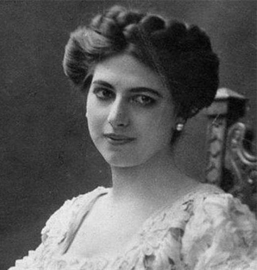
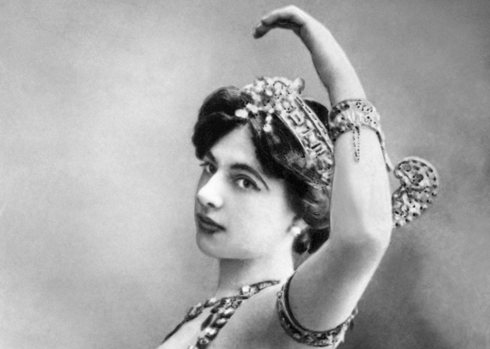

NỮ GIÁN ĐIỆP LỪNG DANH NHẤT THẾ GIỚI TRONG TRẬN ĐẠI CHIẾN 1914-1918. Làm trinh thám một lượt cho cà Nga, Đức, Hòa Lan, Ý, Pháp, Anh... Tình nhân của hầu hết các Quốc Trưởng, Đại Sứ và Tướng lãnh Châu Âu trong thời Đại chiến. Sắc đẹp huyền bí lạ lùng của MATA-HARI đã làm đảo lộn cả cục diện Âu Châu hồi đầu thế kỷ XX.

Không ai ngờ một nàng vũ nữ bí mật (sự thật thì không bí mật gì hết, chỉ tại nàng đổi tên và giấu nơi sinh trưởng để cho ai nấy đều lầm tưởng rằng nàng là một mỹ nhân của đảo Java) mà cả chiến cuộc Âu Châu hồi đệ nhất thế chiến 1914-1918 đã bị biến đổi rất nhiều. Hầu hết các Tướng lĩnh, các Đại sứ, các Quốc Trưởng Nga, Đức, Pháp, Anh, Ý, Hòa Lan đều bị nàng lừa rất tài tình, chỉ tại vì họ say mê đôi mắt đẹp huyền bí lạ lùng của người tuyệt thế giai nhân ấy.
Mata-Hari chỉ là một vũ nữ, gần như một con điếm. Trước Tòa án Quân sự, nàng cũng thừa nhận rằng nàng chỉ là một cô gái làng chơi. Ấy thế mà cả vận mệnh Âu Châu và thế giới hồi đầu thế kỷ XX gần như ở trong tay nàng. Mata-Hari thật là một người đàn bà phi thường vậy.
Nàng bị Tòa án Quân sự Pháp xử bắn ngày 15/10/1917, cái chết bi thảm khiến cho muôn vạn người khóc trên thế giới, muôn nghìn người ca ngợi, hầu hết các báo đều bênh vực cho nàng. Đến nay đã nửa thế kỷ, tính ra đã có trên 140 quyển sách viết về "những bí mật của đời sống và cái chết của Mata-Hari", và nhiều cuốn phim.
Ai cũng còn nhớ năm 1955, một cuốn phim nhan đề "Con gái của Mata-Hari" đã được quay tại Hollywood mà Greta Garbo đóng vai chính, làm Mata-Hari đã được khán giả hoan nghênh nhiệt liệt...
Đây, tôi xin kể về "những bí mật của đời sống và cái chết của Mata-Hari"
* ÔNG HIỆU TRƯỞNG MÊ CÔ NỮ SINH... CÔ HỌC TRÒ PHẢI THÔI HỌC Ở NHÀ ĐỌC TIỂU THUYẾT TÌNH
Xem bức hình in trên đây, ai cũng tưởng rằng Mata-Hari là một cô gái Ấn Độ hay là Indonesia, nghĩa là một đệ tử huyền bí của Ấn Độ giáo (Hindouisme) với những vũ điệu uốn éo lả lơi trước tượng Thần Siva. Chính nàng cũng tuyên bố với mọi người như thế để cố giữ lấy tính cách "huyền bí" của nàng, nhưng sự thật không phải thế. Điều tra tận nguồn gốc, người ta biết rằng Mata-Hari chỉ là cái tên hấp dẫn do nàng bịa đặt ra từ khi nàng cũng bắt đầu bày ra một "vũ điệu thiêng liêng" và trở thành một vũ nữ có tiếng tăm ở Holland, và tên thật của nàng là Margaretha Geertruida Zelle, sinh ngày 7 tháng 8 năm 1876 tại Leeuwarden, một quận nhỏ của xứ Holland (Hòa Lan) ở phía Bắc nước Belgique và nước Pháp. Cha nàng là Adam Zelle, có cửa hàng bán mũ, cũng nổi danh ở địa phương vì có bộ râu xồm xoàm đen thui, và tính nết khả ố cả quận ai cũng ghét. Vợ ông là bà Antje, khi sinh đứa con gái kia ra thì được hàng xóm láng giềng ai nấy đều vui mừng khen ngợi vì đứa bé xinh đẹp quá. Cô mụ bảo ngay: "Con nhỏ này lớn lên sẽ đẹp nhất thế giới và tóc đen".
Cô mụ nói đúng. Mới 12 tuổi, Margaretha đã lớn như cô gái thường 16 tuổi, sắc đẹp lộng lẫy và đôi mắt - nhất là đôi mắt... huyền bí âm u. Đôi mắt của người Châu Âu mà lại xếch lên hai bên khóe như mắt người Á Đông, lại to lớn, tròng con ngươi đen nhánh, nhìn ai cũng như thôi miên, muốn hút người ta.
Cô bé mới 12 tuổi mà ra đường ai cũng phải nhìn, nhất là đàn ông, đi khỏi rồi còn quay lại trầm trồ: "Con nhỏ ngộ quá há!".
Cô 14 tuổi thì người cha vỡ nợ, cửa tiệm bị tịch biên, mẹ cô buồn rầu chết vào năm 1891. Margaretha vừa thi đỗ Trung học, mồ côi mẹ, cha bị sạt nghiệp, gia tài không còn một đồng xu, được ông chú đem về nuôi cho đi học trường Sư phạm, định cho sau này làm cô giáo.
Ông Hiệu trưởng trường Sư phạm thấy cô nữ sinh đẹp quá đâm ra mê tít. Ông không để cho cô học hành gì được cả. Cứ mỗi buổi sáng, ông gọi cô lên văn phòng đọc cho cô nghe những bài thơ ông đã làm để tặng cho đôi mắt đẹp huyền bí của cô, với nào là đôi môi đầy men yêu đương của cô, nào là mái tóc huyền của cô đen như một đêm mùa hè, nào là nước da của cô màu trời mơ, dịu dàng man mác... Cô nữ sinh Margaretha cứ cười ngất không biết trả lời sao cả.
Cái trò lăng nhăng ấy kéo dài trong hai tháng, Margaretha chê ông Hiệu trưởng làm thơ dở ẹc, không cảm động tí nào cả. Về nhà cô méc lại với chú thím và nhất định thôi học. Ông chú và bà thím chiều cô, để cô hoàn toàn tự do. Margaretha ở nhà chuyên môn đọc tiểu thuyết ái tình để giết thì giờ.

* MẤY DÒNG RAO VẶT "KIẾM VỢ" CỦA MỘT ĐẠI ÚY TRONG TỜ BÁO LÁ CẢI CỦA ÔNG CHÚ LÀ ĐẦU DÂY MỐI NHỢ
Ông chú của cô có một tờ báo tên là "Tin mỗi ngày", một tờ báo sống dở chết dở xuất bản tại Thủ đô La Haye. Một hôm Margaretha đọc trong báo ấy mấy dòng rao vặt ở mục "Hôn nhân" như sau đây:
"Đại úy của Đạo quân Viễn chinh của Anh Hoàng tại Ấn Độ về nghỉ phép ở Holland, muốn tìm một thiếu phụ trẻ, đẹp, duyên dáng để kết hôn. Hoàn toàn kín đáo. Hộp thơ số..."
Cô nữ sinh mơ màng suy nghĩ: Một Đại úy, chắc hẳn đã lớn tuổi rồi, nhưng không sao. Một Đại úy của Quân đội Anh Hoàng tại Ấn Độ chắc là oai lắm. Ấn Độ là một xứ xa lạ ở tít Á Đông. Margaretha tưởng tượng nếu đi du lịch đến các xứ này với một người yêu làm Đại úy trong Quân đội Viễn chinh của Anh Hoàng thì thật là một cuộc phiêu lưu ái tình thích thú lắm. Cô nữ sinh liền hăng hái lấy giấy bút viết thư cho viên Đại úy không quen biết, và kèm theo bức ảnh.
Trước khi biết kết thúc vụ này như thế nào, ta nên biết rõ về Đại úy. Tên là Rudolf Mac Leod, người Anh, Đại úy thuộc về dòng dõi một quý tộc có danh tiếng trong lịch sử xứ Scotland, một vùng ở phía Bắc England. Ông nhập ngũ trong Quân đội Anh Hoàng từ 22 tuổi, 17 năm ở bên Ấn Độ, bây giờ ông đã 39 tuổi, mới được nghỉ phép một tháng. Về Anh quốc, ông biết tin sắp được thuyên chuyển qua Java, trên quần đảo Indonesia, thuộc địa Holland. Ông bèn sang chơi bên Holland với ý định kiếm một người vợ đẹp của xứ này để đem theo qua Java. Vì ít giao du với phụ nữ nên ông định đăng mấy dòng "kiếm vợ" trên mặt báo "Tin tức mỗi ngày". 40 tuổi, nhưng người ông rất khỏe mạnh, mặc y phục Đại úy coi oai lắm, lại có một bộ râu lún phún trên bờ môi trông ra vẻ một gã rất đa tình. Đăng quảng cáo xong, Đại úy Mac Leod đợi một tuần lễ, nhận được 16 bức thư phúc đáp. Trong số đó, ông thấy có ảnh của một nữ sinh tên là Margaretha Zelle ở Thủ đô La Haye là đẹp hơn cả, và đẹp lạ lùng khiến ông mê ngay. Nhưng ông viết thư trả lời:
"Hỡi người đẹp không quen biết ơi! Cô 18 tuổi, mà than ôi tôi đã 40 rồi, có thể yêu nhau được không?"
Margaretha viết thư đáp:
"Chả cần tuổi tác! Có thể yêu nhau"
Đại úy Mac Leod lại viết:
"Tiếc quá! Tôi đang bị sốt nặng lắm. Không thể nào gặp được cô vào lúc này".
Margaretha trả lời:
"Chả cần sốt rét. Cho tôi biết địa chỉ, tôi đến thăm ông".
Cô nhận được phúc đáp liền:
"Chả cần địa chỉ. Tôi chờ cô trước Bảo tàng viện Amsterdam"
Thế là ngày Chủ nhật 24 tháng 3 năm 1895, Đại úy Mac Leod mày râu nhẵn nhụi, nhung phục bảnh bao đứng trước cửa Bảo tàng viện hồi hộp mong đợi người đẹp không quen.
Margaretha đến. Trước sắc đẹp rực rỡ huyền bí như một vị nữ thần Ấn Độ, chàng Đại úy sung sướng quá, mê ly quá, choáng váng mặt mày, muốn quỳ sụp dưới chân nàng. Cô nữ sinh 18 tuổi duyên dáng mĩm cười:
- Chào Đại úy!
Chàng lính quýnh lẩm bẩm trong mồm:
- Chào... chào... Margaretha...
Tiếng sét đã đánh xẹt vào hai trái tim xúc động...
Cuộc gặp gỡ hẳn là thú vị lắm, nên ngay hôm sau cô nữ sinh Margaretha Zelle viết thư cho chàng Đại úy đã ký là "Cô vợ bé nhỏ tương lai của anh. Yêu anh vô kể".
Sáu ngày sau, ngày 30/3/1895, hai người đính hôn.
Họ viết thư cho nhau mỗi buổi sáng và mỗi buổi chiều. Mãi đến cuối tháng Ba nàng vẫn còn ký tên là "Cô vợ bé nhỏ tương lai của anh".
Cuối tháng Tư, sau bốn tuần ôm ấp nhau thật gắn bó, Margaretha viết thư bỏ hẳn chữ "tương lai", chỉ còn lại "cô vợ bé nhỏ của anh", và tăng cường thêm mấy danh từ xưng hô mới: "Người yêu riêng của em".
Viên Đại úy sung sướng nhất trên đời. Mặc dầu chị ông cản trở bảo: "Sao chị xem con nhỏ ấy lẳng lơ quá", mặc dầu các bạn thân của ông cũng bảo: "Margaretha còn con nít quá, sợ bồng bột lúc đầu, sau này nó sẽ cắm sừng cho anh". Đại úy Mac Leod vẫn quyết định cưới cô nữ sinh về làm vợ. Lễ cưới được tổ chức long trọng ngày 11 tháng 7 năm 1895, 6 tháng sau cái quảng cáo "tìm vợ" đăng trên tờ báo "Tin tức mỗi ngày".
Cặp vợ chồng mới cưới về ở tạm nhà chị của chàng, Louise Leod. Nhưng hai tháng sau, chàng bắt đầu thấy "cô vợ bé nhỏ" của chàng hãy còn khờ khạo và nhỏng nhẽo quá. Tiền lương của ông Đại úy không có bao nhiêu mà bà Đại úy cứ đòi sắm găng mới, giày mới, nón mới, áo mới, thét rồi ông Đại úy nổi quạu công kích cô vợ trẻ.
Mac Leod là người trí thức yêu chuộng văn chương, âm nhạc, còn Margaretha tối ngày chỉ lo phấn sáp và diện bảnh, rủ chồng đi ăn tiệm, đi khiêu vũ, đi coi hát. Mac Leod bực mình nhưng ráng chiều cô vợ trẻ.
Ngày 23 tháng 4 năm 1896, Margaretha đã lừng danh là người đàn bà đẹp nhất ở Amsterdam, được vào yết kiến Nữ Hoàng Withelmine của xứ Holland. Nữ Hoàng cũng phải khâm phục nhan sắc diễm lệ tuyệt trần của bà Đại úy Mac Leod. Cả Triều đình Holland đều tấm tắc khen ngợi Đại úy đã có diễm phúc cưới được người vợ tuyệt thế giai nhân.
Thế rồi ngày 1/5/1897, Đại úy đem cô vợ trẻ đẹp và đứa con trai đầu lòng mới sinh, tên là Norman lên tàu Prince Amalia đi qua quần đảo Indonesia ở Đông Nam Á. Đầu tháng 6, hai vợ chồng ở tại Thủ đô Batavia, rồi vài ngày sau Đại úy đổi đi đóng ở Wilhem I, một đồn binh hẻo lánh ở Trung bộ Java.
Đến đây, Margaretha không có gì để giải trí đâm ra buồn chán. Phong cảnh rất nên thơ nhưng Margaretha đâu có biết thưởng thức, thiên nhiên, sơn thủy hữu tình đối với nàng chẳng có ý nghĩa gì cả. Cả ngày nàng chỉ ngồi trước tủ kính bôi son, trét phấn và lo trau dồi sắc đẹp, không ngó ngàng gì đến việc gia đình và con cái.
Rudolf Mac Leod được lên chức Thiếu tá và đổi đến hải cảng Malang, Margaretha được đến nơi đây lấy làm thích thú lắm. Malang - cũng như Nha Trang, là một hải cảng lớn, có đầy đủ tiện nghi của một thành phố tân tiến, đủ các trò giải trí, các nhân vật cao cấp, các tiệm khiêu vũ, các nhà hát. Tháng 5 năm 1898, Margaretha lại sinh đứa con gái tên là Louise Jeanne. Hạnh phúc gia đình của viên Thiếu tá Rudolf hình như được xây đắp bền vững hơn, nhưng đó chỉ là bề ngoài thôi. Nhan sắc diễm tuyệt của bà Thiếu tá trẻ tuổi, ham diện, ham chơi là nguyên nhân của sự gãy đổ sau này.
Tháng 9, nhân ngày Lễ mừng Nữ Hoàng Wilhemine lên ngôi, hai viên Trung úy đẹp trai có soạn một vở kịch mà họ mời bà Thiếu tá đóng vai chính là vai Hoàng Hậu. Đêm ca vũ nhạc kịch do Quân đội tổ chức được thành công rực rỡ là do bà Thiếu tá kiều diễm chủ tọa. Các Tướng lãnh, các Sĩ quan, các nhân vật cao cấp của chính phủ bao vây chung quanh bà Thiếu tá và không ngớt ngợi khen bà, hoan hô bà một cách nồng nhiệt. Ai nấy đều đua nhau nịnh bợ bà để được bà trao tặng một nụ cười...
Thiếu tá Rudolf hãnh diện có người vợ được thiên hạ tâng bốc lên mây xanh như thế, nhưng dần dần ông nhận thấy bà trao đổi rất nhiều cái liếc mắt tình tứ với những viên Sĩ quan khác, nhiều nụ cười đầy hứa hẹn với các chàng trai trẻ... Ông đâm ra ghen tức, mỗi ngày mỗi ghen... ghen dữ tợn, ghen ghê gớm, ghen ồn ào náo động cả thành phố Malang...
Ông liền xin di chuyển tới Medan (đảo Sumatra), một nơi điều hiu vắng vẻ cũng như Pleiku, Kontum vậy. Margaretha nhất định không đi theo chồng.
Thiếu tá Rudolf bèn đi một mình để cô vợ trẻ đẹp, "Hoàng Hậu Java" ở lại Malang.
Lúc đầu, nàng còn trả lời các bức thư yêu nhớ của người chồng si tình, dần dần nàng lạnh nhạt, không thèm viết thư, không thèm hỏi han thăm viếng nữa. Hai đứa con của nàng, nàng cũng bỏ bê, ốm yếu xanh xao, không ngó ngàng đến. Thiếu tá hoàn toàn thất vọng, sinh ra oán ghét và sau cùng quyết định ly dị, nhưng nàng không chịu ly dị.
Ngày 27/6/1899, đứa con trai lớn Norman bị con đầy tớ mọi thuốc chết. Thiếu tá đau khổ đến cực điểm, khóc lóc thê thảm và van xin Margaretha bằng lòng ly dị để cho chàng thoát khỏi tình thế tuyệt vọng. Nhưng bà Thiếu tá trẻ đẹp, duyên dáng lắc đầu: "Tôi không muốn ly dị vì tôi đợi anh chết để tôi được lãnh tiền trợ cấp quả phụ"
Tức mình, Thiếu tá nắm đầu tóc vợ lôi kéo nàng ra đường và lấy roi cá đuối đánh nàng bầm tím cả thân thể. Chàng còn rút súng ra chĩa vào mặt nàng: "Mày không chịu ly dị thì tao bắn mày chết ngay bây giờ!".
Cả thành phố đều xôn xao về vụ của gia đình Margaretha Zelle và Thiếu tá Mac Rudolf.
Ngày 30/8/1902, tòa án Amsterdam xử cho vợ chồng ly dị. Thiếu tá Rudolf lấy ngay người vợ khác, còn Margaretha Zelle về ở với cha tại Thủ đô La Haye.
Năm 1903, nàng đổi tên là Mata Hari, sang Paris hành nghề vũ nữ.
* MATA HARI - NÀNG VŨ NỮ ĐỎ, BẮT ĐẦU LÀM MÊ HOẶC CÁC GIỚI NGOẠI GIAO QUỐC TẾ Ở PARIS
Ở Paris, Mata Hari tự xưng là một vũ nữ của đảo Java, chuyên môn múa các vũ khúc Ấn Độ theo các sự tích huyền bí của Thần Vichnou. Ai cũng lầm tưởng, Mata Hari không phải là người phụ nữ Âu Châu, vì sắc đẹp của nàng và lối khiêu vũ của nàng y hệt người Ấn Độ và ai cũng tin rằng tuy Mata Hari quê ở đảo Java thuộc quần đảo Indonesia nhưng nàng tuyên bố rằng nàng vẫn theo tục lệ ca vũ huyền bí của Ấn Độ giáo từ thời Thượng cổ, trước thời kỳ Phật giáo nữa.
Lần đầu tiên trong một buổi dạ hội ở Tòa Đại sứ Chili tại Thủ đô Pháp, Mata Hari ra mắt các giới ngoại giao quốc tế, khiến cho toàn thể khán giả đều vô cùng xúc động. Trước khi giới thiệu Mata Hari, một ông già người Ấn Độ râu tóc bạc phơ tuyên bố mấy lời sau đây (theo lời thuật lại của một văn sĩ Mỹ có dự buổi trình diễn ấy):
- Thưa các Ngài, tôi xin phép giảng giải sơ qua ý nghĩa của vũ khúc mà nàng Mata Hari, người đẹp của Java sắp trình diễn nơi đây. Đây là sự tích nàng Công chúa Anuba biết ở dưới đáy biển Ấn Độ có một cái vỏ hến đựng một viên ngọc đen giống như viên ngọc huyền nạm trên chiếc gươm thần của Mescheb. Công chúa Anuba muốn có viên ngọc đen ấy bèn tìm cách quyến rũ anh chài lưới Amry để xúi anh xuống dưới đáy bể mò lấy viên ngọc ấy cho nàng. Người chài thuyền hoảng hốt nói với Công chúa rằng việc nàng muốn đó rất là điên rồ, vì cái vỏ hến có viên ngọc kia do một con ác quỷ dữ tợn đang gìn giữ, ai đến gần sẽ bị nó vồ nuốt vô bụng. Nhưng Công chúa nhất định muốn có viên ngọc quý, nàng nũng nịu làm tất cả các điệu bộ khêu gợi với cặp mắt sáng rực như lửa cám dỗ anh thuyền chài cho đến say mê nàng. Anh lặn xuống đáy biển để rồi một lúc sau trở lên đem được viên ngọc cho Công chúa Anuba, nhưng thân thể anh đã bị con ác quỷ cào cấu bấu xé đã nát thịt, tan xương, đầy cả máu me...
Công chúa không cần nhìn cái xác gần chết của anh thuyền chài, nàng chỉ nâng niu viên ngọc đen dính máu, ôm nó lên ngực, lên môi và múa hát mê ly ảo huyền trước ngọn đèn thần của tượng Thần Vichnou...
Nàng Mata Hari sẽ đóng vai Công chúa Anuba, nàng đẹp một sắc đẹp huyền ảo đê mê như nàng Urwaci, trong sạch như nàng Damayanti từ trong đền Thần Sakuntala hiện ra trước người thuyền chài..."
Ông già Ấn Độ vừa nói đến đây thì tất cả đèn trong phòng đều tắt hết, chỉ còn sáng rực rỡ một ngọn đuốc cháy hoe trên vũ đài mờ ảo... Một nữ thần xuất hiện với một sắc đẹp huyền bí lạ thường, gần như khỏa thân: đây là Mata Hari hiện thân Công chúa Anuba... Nàng múa qua, múa lại, uốn éo thân thể nõn nà, uyển chuyển những đường cong tuyệt mỹ... Làm cho gần 200 khán giả, đại diện cho toàn thể các nước trên thế giới hồi hộp... im lặng... nín thở... như bị thôi miên trong giấc mộng huyền mơ...
Suốt hai tiếng đồng hồ, cả vũ trụ lạ lùng huyền linh say sưa nàng vũ nữ Ấn Độ của Mata Hari...
Mata Hari! Mata Hari! Sáng hôm sau, các báo ở Paris đều đăng hình ảnh nàng và viết bài tường thuật đêm ảo tượng ở Tòa Đại sứ Chili với những lời khen tặng, ca ngợi đặc biệt nàng "Vũ nữ đỏ", "Vũ nữ máu", "Vũ nữ thần tiên" có một không hai trên thế giới, vô tiền khoán hậu từ cổ chí kim...
Chỉ có hai tiếng đồng hồ, và một vũ khúc mà tiếng tăm của nàng Mata Hari bỗng dưng trổi dậy cả kinh thành Paris, vang lừng khắp các Thủ đô Âu Mỹ.
Sau mỗi buổi trình diễn ca vũ như thế, nàng được hàng trăm ngàn người say đắm ước mơ. Các nhà triệu phú, các nhân vật thượng lưu quốc tế ở Paris tranh nhau mời nàng dự tiệc và khiêu vũ, kẻ đón người đưa tấp nập.
Người ta tò mò hỏi nàng quê quán ở đâu thì nàng giấu lai lịch thật của nàng mà bịa đặt cho có vẻ ly kỳ bí mật như sau đây:
- Em sinh ra ở Miền Nam xứ India, trên bờ biển Malabar, nơi một thành phố linh thiêng tên là Jaffuapatam. Gia đình em thuộc về hạng quý tộc Brahmanes. Thân sinh của em, Suprachetty, vì có tâm hồn thanh cao và bác ái nên được dân chúng tôn thờ là Assirvadam, có nghĩa là "Được Thượng đế yêu thương". Thân mẫu của em là một vị nữ tu sĩ tinh khiết ở đền Kanda Swany, chết hồi 14 tuổi ngay hôm sinh em ra đời. Các vị tu sĩ làm lễ hỏa táng cho mẹ em xong, rồi họ nuôi em trong đền và đặt tên em là Mata Hari, có nghĩa là "Đứa con của Bình Minh". Đến khi em biết đi được một bước, họ nhốt em trong một hầm kín ở dưới đất trong đền Siva để tập cho em điệu múa trong các lễ tế thần theo như Thân mẫu em đã múa. Múa xong, em được đi lên chơi trên vườn chùa và hái những cánh hoa lài để tết thành những vòng hoa thơm trắng đem trang trí điện thờ Thần. Đến khi em 14 tuổi, đã đến tuổi dậy thì, một đêm Xuân, Satky Pudja, vị nữ tu cai quản Đền Siva, làm lễ thành hôn cho em với Thần Siva và chỉ giáo cho em các nghi thức huyền ảo của ái tình và tính ngưỡng..."
Nói đến đây, Mata Hari bỗng run khắp cơ thể như bị Thần Siva nhập vào thể xác và đứng dậy múa. Những điệu múa lả lơi, uyển chuyển, làm nổi bật bộ ngực tuyệt đẹp của nàng, với những đường cong uốn éo mềm mại của tấm thân nửa kín nửa hở đầy khêu gợi.
Những người nghe Mata Hari kể chuyện như thế phần đông là các ông Hàn Lâm Viện, các nhà học giả, các ông Tổng trưởng, Đại sứ. Họ hỏi nàng:
"Thế nào là nghi thức ái tình trong đêm Xuân Satky Pudja ở Đền Kanda Swany?" thì nàng bịa đặt ra bằng lời nói huyền bí, bằng cử chỉ ly kỳ ảo tưởng, các nghi thức lạ lùng mà từ xưa tới nay không ai được biết.
Dưới ánh sáng chói lọi của muôn nghìn ngọn đèn màu, với hơi rượu ngà ngà say, với mùi thơm ngạt ngào của các loại nước hoa lạ của Arabie làm ngây ngất toàn thể cử tọa, Mata Hari vận y phục nghi lễ vô cùng lộng lẫy, chỉ che sơ sài đôi tuyết lê đầy đặn nở nang, và một tấm voan mỏng đeo đầy hột kim cương che dưới bụng để hở rốn và hở cả bắp đùi, cả đôi ống chân ngà trắng nõn, nàng vừa giảng giải từng điệu bộ, vừa uốn éo múa qua múa lại, ưỡn lên ưỡn xuống, nghiêng ngã, xoay tròn đưa ra trước mắt mọi người cả những nét đẹp khêu gợi, đê mê, của thân thể lõa lồ đầy nhựa sống lên men của nhục dục.
Rồi bỗng dưng trong lúc nàng như chìm đắm trong vũ điệu mê ly, các ngọn đèn đều tắt, chỉ còn mờ ảo một ánh sáng huyền mơ, một điệu đàn thần linh xa xăm trổi dậy. Một tu sĩ râu tóc bạc phơ chống gậy từ trong bước ra, dừng bước nhìn trời. Từ ba ngôi sao sáng rực hiện ra ba vị Nữ Thần... Tiếng đàn ầm ĩ, rên rỉ, kéo dài trong đêm mơ, réo rắc như dây tơ, như náo nức, như thổn thức, như rạo rực trong hương mơ... Vũ nữ Mata Hari thổi một tiếng sáo vi vu, âm u... tức thì từ trong rừng thẫm bò ra một con rắn thần... Rắn thần bò đến nàng, trườn lên mình nàng, quấn vào ngực nàng, rồi cùng với nàng say sưa trong vũ điệu mê hồn...
Cảnh tượng ly kỳ bí ẩn ấy khiến cho toàn thể khán giả đều hồi hộp, say sưa, như hoàn toàn bị thôi miên bởi sắc đẹp, bởi điệu múa, bởi không khí huyền ảo bao bọc nàng vũ nữ của Kanda Swany.
Trong thời gian không lâu, từ địa vị người vợ của Thiếu tá bị chồng bỏ, thất nghiệp, bơ vơ, nghèo nàn Mata Hari đã bỗng dưng trở nên một vũ nữ đanh tiếng được muôn nghìn người yêu mê. Một ông Tổng trưởng, một ông Hoàng tử ngoại quốc, và một ông Đại sứ là những tình nhân gắn bó nhất của nàng. Bây giờ nàng ở một lâu đài nguy nga tráng lệ trên Đại lộ Champs Êlysées - một Đại lộ sang trọng nhất của Paris. Nàng có xe hơi, có tài xế riêng, có bồi bếp. Y phục nàng rực rỡ như bà Hoàng hậu. Thân thể nàng đeo đầy những kim cương, ngọc thạch. Nàng tiêu xài tiền bạc như nhà triệu phú, sắm sửa xa hoa, ăn chơi phun phí. Lúc bấy giờ có ai dám nghi ngờ Mata Hari là một nữ gián điệp của một nước nào đâu. Ấy thế mà theo bản cáo trạng của Tòa án quân sự Paris mùa thu 1917, thì chính lúc bấy giờ Mata Hari cũng là tình nhân của Thái tử nước Đức Frédéric Guillaume - con của Hoàng đế Guillaume II, của Quận công Brunswick, và của Đô trưởng kinh thành Berlin.
Mata Hari nhìn nhận rằng, tất cả những nhân vật to lớn ấy đều là tình nhân của nàng, nhưng không bao giờ nàng làm gián điệp cho ai. Có thể trong thời kỳ chiến tranh (1914-1918), họ lợi dụng lòng thành thật của nàng để nàng vô tình thổ lộ những bí mật quân sự mà nàng biết được do những người yêu của nàng nói cho nàng nghe, chứ thật nàng không có ý làm gián điệp cho ai cả. Tuy nhiên, cũng vì tình nhân của nàng là những nhân vật cao cấp đủ các nước tụ họp ở Paris: Đức, Pháp, Anh, Mỹ, Ý, Nga, Hòa Lan nên người nước nào cũng lợi dụng những cuộc giao duyên rộng rãi của nàng để dọ thám người nước khác. Vì vậy, nếu Mata Hari quả thật là Nữ gián điệp, thì nàng đã vô tình làm Nữ gián điệp mà chính nàng củng không hề biết tới. Mata Hari chỉ muốn hưởng trọn vẹn đời sống xa hoa mỹ lệ mà thôi. Nàng đã viết trong nhật ký của nàng một đoạn văn như sau đây: "Ta sẽ chết như tất cả mọi vật trên đời đều phải chết. Trong khi chờ đợi Tử thần, ta phải sống những giây phút đầy đủ, tốt đẹp, vẻ vang. Thà rằng sống trên quả đất một cuộc đời ngắn ngủi nhưng rực rỡ, tưng bừng, còn hơn là kéo mãi một tuổi già không đẹp đẽ"
Vì vậy, Mata Hari không có lý tưởng về đời sống tinh thần, nàng cũng không cần đeo đuổi một mục đích gì cao cả. Chỉ yêu để sống, sống để yêu, và hạnh phúc đối với một nàng vũ nữ lừng danh quốc tế như nàng là ăn chơi, trang điểm, múa hát say sưa. Chính vì lẽ đó mà nàng luôn luôn sẵn sàng bán xác thịt của nàng với giá rất đắt, để cho được hưởng đầy đủ các lạc thú khoái trá mê ly. Chứ nàng không nghĩ đến việc làm nghề nữ gián điệp cho một quốc gia nào, bởi vì tất cả những người yêu của nàng đều cung cấp cho nàng đầy đủ đời sống xa hoa vật chất.
Nhan sắc cực kỳ lộng lẫy, huyền ảo của Mata Hari đã quyến rũ một số đông các nhân vật cao cấp của các nước thù địch với nhau trong Thế giới Đại chiến, những vị lãnh đạo trong các Chính phủ, các Tổng hành dinh quân đội. Nhưng nàng mặc kệ, sự quyến rũ của đôi mắt đẹp huyền bí của nàng đâu phải là một tội lỗi. Tại vì người ta mê nàng, đeo đuổi theo nàng, chứ nàng có lợi dụng nhan sắc của mình để phản bội ai đâu.
Nhiều người tình nhân của nàng Mata Hari đều quả quyết trước Tòa án Quân sự rằng nàng vô tội. Các nhà chính khách ngoại giao quan trọng như Junoy, Thượng nghị viện Espagne, Claven Moore; Thượng nghị viện Anh; Nhà triệu phú Mỹ Craward; Quận công Basile của Pháp; Đại tướng Bá tước Von Durt - bạn thân của Hoàng đế Đức Guilluame II; Đại sứ Ginoceli của nước Ý...v...v.. đều bênh vực cho Mata Hari.
Có điều chắc chắn là trong thời gian chiến tranh, nàng đi du lịch nhiều nơi. Khắp Châu Âu, nước nào nàng cũng tới, thủ đô và thành phố lớn nào nàng cũng có ghé đến và ở một thời gian. Nhưng nàng quả quyết rằng, nàng không hề làm gián điệp cho ai cả.
Đại tá Massard, Thẩm phán Tòa án Quân sự Pháp tra hỏi nàng:
- Cô có chơi thân với ông Giám đốc Sở Trinh thám Đức, có phải không?
- Có. Ông ta là tình nhân của tôi. Và tôi cũng chơi thân với ông Giám đốc Sở Trinh thám Pháp, ông này cũng là tình nhân của tôi.
- Ông Giám đốc Sở Trinh thám Đức có tặng cô số tiền là 300.000 đồng Đức kim.
- Có. Đó là tiền ông cho tôi vì ông đã ngủ với tôi nhiều đêm. Cũng như các ông khác cho tôi nhiều tiền để trả những ân huệ riêng của tôi, chứ không phải tiền thuê tôi làm gián điệp.
- Cô có quen thân với Đại tá Nga, Marov?
- Có. Đại tá Marov ở Tổng hành dinh Nga, cũng là tình nhân của tôi. Thiếu tướng Giám đốc Đệ nhị phòng của Pháp cũng là tình nhân của tôi. Ông Tổng trưởng Chiến tranh của Pháp cũng là tình nhân của tôi...
Nghe Mata Hari kể một dọc những tình nhân của nàng, ai nấy đều ngán cả. Mà đúng thế, những tình nhân mà nàng kể tên đều giao du mật thiết với nàng. Cho nên hồi tháng 9 năm 1917, nàng bị mấy Sĩ quan Pháp tố cáo là nữ gián điệp, tất cả các Tổng hành dinh Âu Mỹ đều kinh ngạc, không ai tin cả.
Nhưng theo tất cả các giấy tờ tịch thu được ở nhà nàng thì các vị thẩm phán quân sự đều quả quyết nàng là nữ gián điệp. Nguy hơn nữa, chính tại nàng mà Quân đội Pháp bị thua nhiều trận lớn ở các mặt trận phía Bắc. Nàng đã cho người Đức biết trước các cuộc vận quân của Pháp, do những tin tức bí mật của các sĩ quan ở Tổng hành dinh Pháp nói cho nàng hay. Đó là bản cáo trạng tố cáo Mata Hari, nhưng Mata Hari thì quả quyết là không đúng. Một vài Sĩ quan Pháp ganh ghét nàng nên cố tình làm hại nàng đó thôi.
Dù sao, mùa Thu năm 1917, Mata Hari bị Tòa án Quân sự Pháp kết án tử hình. Theo bản cáo trạng thì Mata Hari làm nữ gián điệp cho cả mấy nước Nga, Đức, Pháp, Ý, Nga, Hòa Lan, nhưng nàng đối với nước Pháp nguy hại hơn cả nên ngày 13/2/1917 nàng bị bắt. Ngày 24 và 25 tháng 7, nàng bị ra tòa và cuối cùng bị xử bắn.
Mặc dù nhiều vị Luật sư nổi tiếng như Clunet và nhiều nhân chứng quan trọng, các nhà báo, nhà văn, họa sĩ, Tổng trưởng, Đại sứ, Sĩ quan, Nghị sĩ, Thủ tướng đã cố hết sức bào chữa cho nàng mà không được.
Sáng ngày thứ Hai 15/10/1917, Mata Hari - một hoa hậu của thế giới, có sắc đẹp nghiêng nước nghiêng thành đã chết một cách oanh liệt, không khóc. Nàng không xin, không sợ, kiêu hãnh với một nụ cười tình tứ trên môi trước một loạt súng của 12 người lính Pháp dưới sự chỉ huy của Đại tá Semprou. Chính Đại tá rưng rưng ngấn lệ sau khi truyền lệnh bắn người đẹp của muôn thuở.
Có sách chép rằng, Mata Hari vừa gục xuống vũng máu thì có một tên kỵ mã tức tốc phi ngựa tới pháp trường Vincennes đưa giấy ân xá của Tổng thống Poincaré... Nhưng Mata Hari không còn nữa.